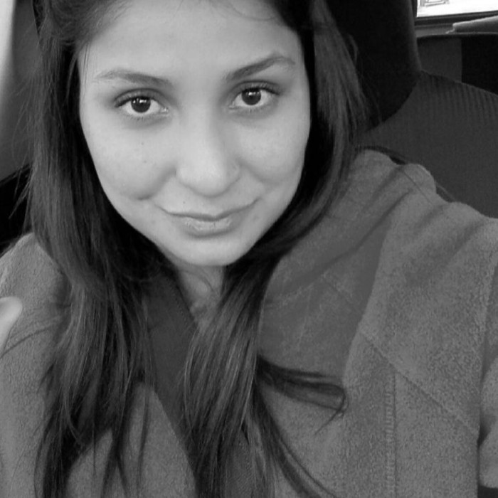

CV Carolina Flores Valdivia
Educadora de párvulos
10 años de experiencia como Educadora de párvulos, estudiante de programación de forma autodidacta.
Educación
- Educadora de párvulos
- 2008-2012 - Universidad Andrés Bello.
- Lenguaje de 3 a 6.
- 2019 - Centro de estudios Montessori.
- Estudiante de Programación front-end y back-end.
- 2022-2023 - autodidacta

Experiencia Laboral
- Educadora de párvulos, nivel transición.
- 2022-2023 - Colegio Philippe Cousteau
- Educadora de párvulos, nivel medio mayor.
- 2021-2022 - Jardín Infantil Puente Mágico
- Educadora de párvulos, nivel medio mayor.
- 2019-2020 - - Jardín Infantil Generación
- Educadora de párvulos, nivel de 3 a 6 años.
- 2019 - - Colegio Huelquen Montessori
Información adicional
- Nacionalidad : Chilena.
- Dirección: Dagoberto Godoy #107.
- Fecha de nacimiento: 06 de marzo 1990
- Rut: 17.315.570-0
- Estado civil: Soltero.